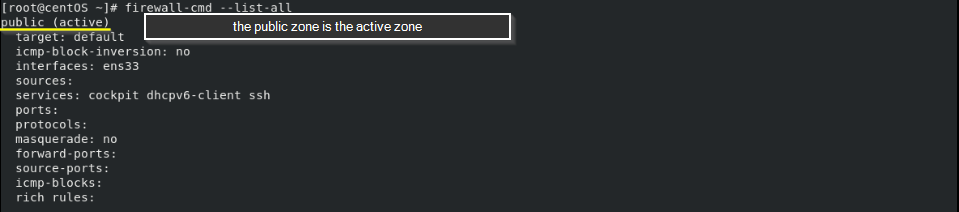
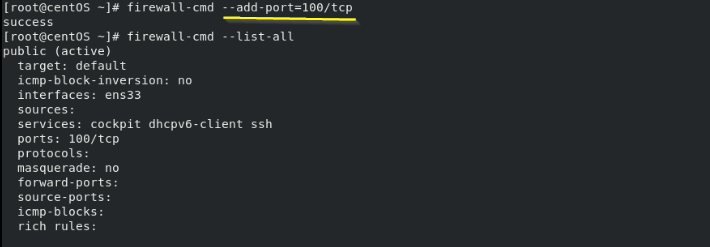
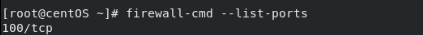
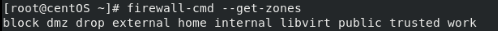

firewalld command
• show a complete overview of the firewalld settings:
• If we want to add a port:
 to come back to the initial configuration we have to type:
to make the changes permanent we have to specify the flag
--permanent firewall-cmd --permanent --add-port=100/tcp
• As seen above with an another command we can have the confirm which zone is currently selected as the default
firewall-cmd --get-default-zone
• active zones:
firewall-cmd --get-active-zones
, or "Virtual Bridge 0" interface is used for NAT (Network Address Translation) because we are in a Virtual Machine enviroment
ens33 is the eth0 interface but in RHEL/CentOS is named differently because came with new feature called “consistent network device naming"
• If i wan to see all the zones i can type:
